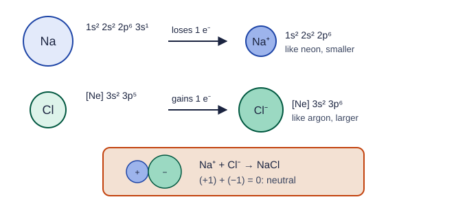

Valence Electrons and Ionic Compounds
Main-group metals lose their valence electrons to form cations, and nonmetals gain electrons to form anions, usually reaching a noble gas configuration.
Part 1 · Hook
Why this matters
Part 2 · Before you start
What this builds on
Part 3 · Prerequisite check
Quick check before you start
1. How many valence electrons does magnesium, [Ne] 3s², have?
- 2
- 12
- 10
- 8
Show the answer
The outermost shell, n = 3, holds 3s²: 2 valence electrons.
- Correct: 2:
- 12:
- 10:
- 8:
2. Across period 3, how does first ionization energy change in general?
- It increases
- It decreases
- It stays the same
- It increases, then falls to zero
Show the answer
Effective nuclear charge rises across the period, so electrons are held more tightly.
- Correct: It increases:
- It decreases:
- It stays the same:
- It increases, then falls to zero:
Part 4 · See it
See it first

Part 5 · Step by step
How it works, step by step
- Metals hold their few valence electrons loosely (low ionization energy)they lose them to form cations
- Nonmetals have a high effective nuclear charge and attract added electronsthey gain electrons to form anions
- Removing electrons past the valence shell, or adding them past the next noble gas, costs far more energymain-group ions usually end up with a noble gas configuration
- Cations and anions attract, and the compound must be neutralthey combine in the ratio that makes the charges cancel
Part 6 · Key ideas
Key ideas
- Group 1 → 1+, group 2 → 2+, group 13 → 3+ (Al); group 15 → 3−, group 16 → 2−, group 17 → 1−. Each ion has a noble gas configuration.
- An ionic compound is made of cations and anions in the ratio that makes the total charge zero: Ca²⁺ + 2 F⁻ → CaF₂.
- Write the cation first; subscripts give the simplest ratio (a formula unit), never 2 : 2.
- Elements in a group have the same number of valence electrons, so they form the same ions and react alike.
Part 7 · Misconception
A common mistake
The wrong idea: Atoms form ions because they want a full outer shell.
What actually happens: Atoms do not want anything. A metal's valence electrons are loosely held, so little energy removes them; removing one more from the core would cost far more. A nonmetal attracts an added electron strongly. Energy and Coulombic attraction set the charge.
Part 8 · Check yourself
Check yourself
Exam-style questions. Anything you miss goes into your review queue.
Particle view
Ions in three solid samples
Key: small blue circle, cation (charge shown); larger green or orange circle, anion (charge shown). Each box is a small piece of a much larger solid.
1. Which box could represent magnesium chloride?
- Box 2
- Box 3
- Box 1
- Boxes 1 and 3 both could
Show the answer
Magnesium (group 2) forms Mg²⁺; chlorine (group 17) forms Cl⁻. Two Cl⁻ balance one Mg²⁺: MgCl₂, the ratio in Box 1.
- Box 2: Box 2 has 1+ cations, but magnesium forms 2+ ions.
- Box 3: Chloride is 1−, not 2−.
- Correct: Box 1: Right: Mg²⁺ and Cl⁻ in a 1 : 2 ratio, so the charges cancel: MgCl₂.
- Boxes 1 and 3 both could: Box 3 has 2− anions, and chloride is 1−. Box 1 matches: 2+ cations and 1− anions in a 1 : 2 ratio.
2. Which formula matches Box 3?
- MgO: a 2+ cation and a 2− anion, 1 : 1
- Mg₂O₂: two of each ion in each formula
- NaCl: a 1+ cation and a 1− anion, 1 : 1
- MgCl₂: twice as many anions as cations
Show the answer
Equal numbers of 2+ and 2− ions: a 1 : 1 ratio, like MgO.
- Correct: MgO: a 2+ cation and a 2− anion, 1 : 1: Right: +2 and −2 cancel one for one.
- Mg₂O₂: two of each ion in each formula: A formula gives the simplest ratio; 2 : 2 reduces to 1 : 1.
- NaCl: a 1+ cation and a 1− anion, 1 : 1: Box 3's ions carry charges of 2+ and 2−.
- MgCl₂: twice as many anions as cations: Box 3 has equal numbers of cations and anions.
3. Why does every box contain cations and anions in the ratio it does?
- Each cation can touch two anions at a time
- Larger ions are outnumbered by smaller ones
- The ions are counted by mass, so heavier ions appear less often
- The charges cancel, so each solid is neutral
Show the answer
An ionic compound is electrically neutral. Box 1: 4(+2) + 8(−1) = 0; Box 2: 6(+1) + 6(−1) = 0; Box 3: 6(+2) + 6(−2) = 0.
- Each cation can touch two anions at a time: How ions touch is about packing, not about the formula ratio.
- Larger ions are outnumbered by smaller ones: In Boxes 2 and 3 the numbers are equal; the charges decide the ratio.
- The ions are counted by mass, so heavier ions appear less often: The ratio counts ions, not masses.
- Correct: The charges cancel, so each solid is neutral: Right: the ratio is set by the charges, so the whole solid has no net charge.
4. A student draws calcium nitride (Ca²⁺ and N³⁻) as a box with equal numbers of each ion. What is wrong with the drawing?
- Nitrogen forms no ions, so it does not belong in the box
- Its charges do not cancel; Ca₃N₂ has 3 Ca²⁺ per 2 N³⁻
- The ratio should be 2 Ca²⁺ to 3 N³⁻, Ca₂N₃
- Calcium ions should carry a 1+ charge
Show the answer
Find the smallest numbers that make the charges cancel: 3 × (+2) = +6 and 2 × (−3) = −6. Ca₃N₂.
- Nitrogen forms no ions, so it does not belong in the box: Nitrogen, in group 15, gains 3 electrons to form N³⁻.
- Correct: Its charges do not cancel; Ca₃N₂ has 3 Ca²⁺ per 2 N³⁻: Right: 3(+2) + 2(−3) = 0.
- The ratio should be 2 Ca²⁺ to 3 N³⁻, Ca₂N₃: That gives 2(+2) + 3(−3) = −5: not neutral.
- Calcium ions should carry a 1+ charge: Calcium is in group 2 and forms Ca²⁺.
Data table
Five main-group elements
Electron configurations of five atoms.
| Element | Group | Electron configuration |
|---|---|---|
| Lithium | 1 | 1s² 2s¹ |
| Calcium | 2 | [Ar] 4s² |
| Aluminum | 13 | [Ne] 3s² 3p¹ |
| Sulfur | 16 | [Ne] 3s² 3p⁴ |
| Bromine | 17 | [Ar] 4s² 3d¹⁰ 4p⁵ |
5. Why does aluminum form Al³⁺ and not Al⁴⁺?
- A 4th electron would come from the core, costing far more energy
- Aluminum has three electrons in total
- A 4+ charge is too large for any ion to carry
- Aluminum wants to have exactly three electrons fewer than before
Show the answer
Al: [Ne] 3s² 3p¹. Losing the 3 valence electrons is affordable; a 4th would come from the 2p core, close to the nucleus and poorly shielded.
- Correct: A 4th electron would come from the core, costing far more energy: Right: after 3 electrons, Al³⁺ has neon's configuration; the next is a tightly held core electron.
- Aluminum has three electrons in total: Aluminum has 13 electrons; 3 of them are valence electrons.
- A 4+ charge is too large for any ion to carry: The limit comes from the energy to remove core electrons, not from a fixed maximum charge.
- Aluminum wants to have exactly three electrons fewer than before: Atoms do not want things; the energy cost of removing each electron sets the charge.
6. What is the formula of the compound formed by aluminum and bromine?
- Al₃Br
- AlBr
- AlBr₃
- Al₂Br₃
Show the answer
Al³⁺ + 3 Br⁻: +3 − 3 = 0. AlBr₃.
- Al₃Br: This puts the 3 on the wrong ion: 3(+3) + (−1) = +8.
- AlBr: One Br⁻ would leave the compound with a 2+ charge.
- Correct: AlBr₃: Right: Al³⁺ and Br⁻; three Br⁻ balance one Al³⁺.
- Al₂Br₃: That would need Al with a charge of 3/2, which does not exist.
Part 9 · Summary
Summary
Part 10 · Up next
What comes next
Part 11 · Connections